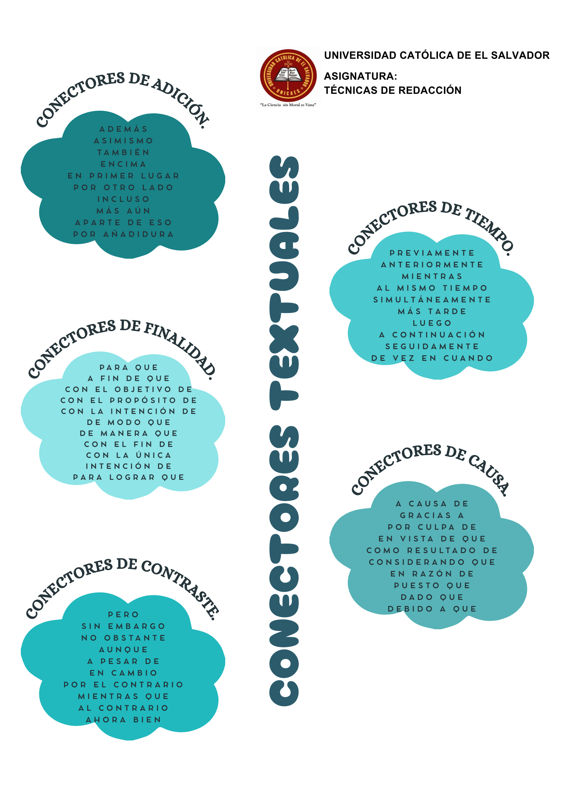
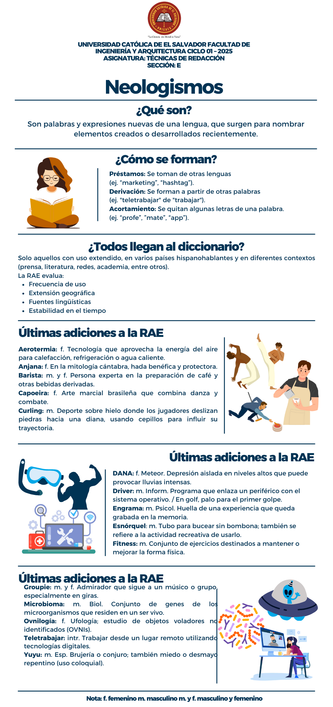
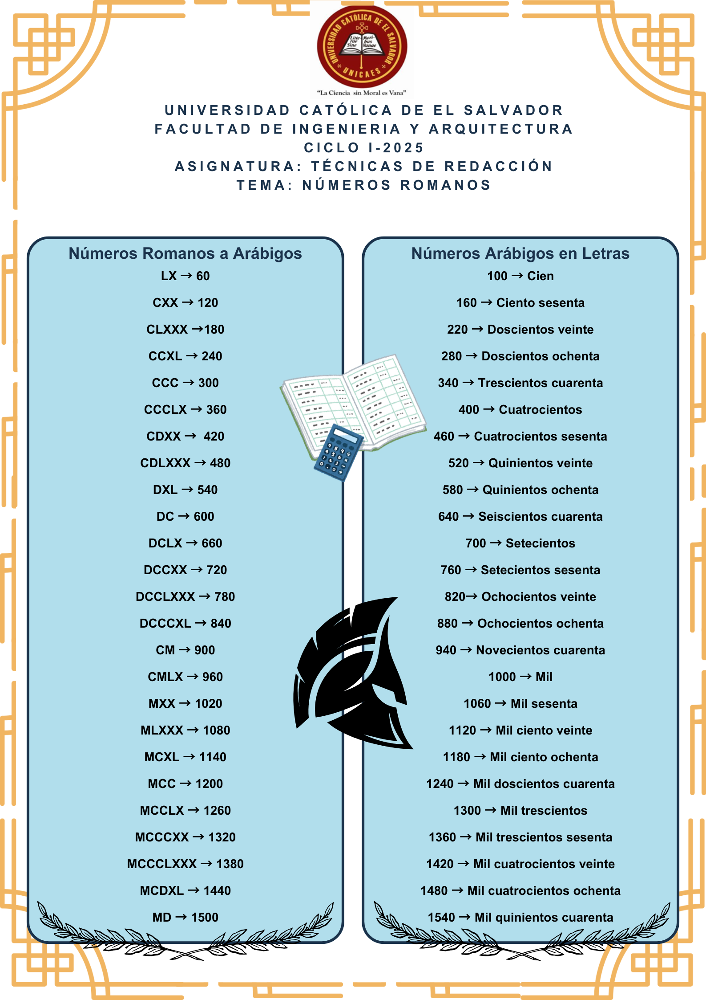

El baúl de los Ings
UNIVERSIDAD CATÓLICA DE EL SALVADOR
FACULTAD DE INGENIERÍA Y ARQUITECTURA CICLO 01 - 2025
ASIGNATURA:
Técnicas de Redacción
TEMA:
Portafolio digital
DOCENTE:
Lcdo. Jorge David Morales Portillo.
ESTUDIANTES:
Acuña Posada Oswaldo Miguel
Cardona Mendoza David Fernando
Martínez Vásquez Javier Alexander
Sandoval Colocho EstefanÍa Jeanmillette
Valenzuela Aguirre Miguel Javier
Santa Ana,
ÍNDICE
¿Cuál es la importancia de un portafolio?
El portafolio es una herramienta versátil que facilita la recopilación de información en diversos
ámbitos, ya sea académico, personal o profesional.
Su importancia radica en su capacidad para facilitar el análisis del progreso, observar el
crecimiento y ahorrar tiempo, tanto individual como laboral.
En el ámbito escolar, permite organizar y sintetizar la información haciéndola más accesible para su
consulta y aplicación.
Al registrar tanto el proceso como los logros, el portafolio se convierte en un recurso apropiado
para evaluar y comunicar el desarrollo en distintos contextos, ya sean profesionales, académicos o
creativos.
Este portafolio académico, centrado en la materia de Técnicas de Redacción, ofrece un registro
detallado de los aprendizajes, actividades, ejercicios y reflexiones a lo largo del curso.
Además de servir como una compilación de los contenidos estudiados, nos permite a nosotros como
estudiantes el tener un medio accesible y sencillo para consulta, compartir y demostrar nuestro
progreso
en nuestras habilidades técnicas en redacción y lo que involucra.
Conectores Contextuales (Póster)
Resumen sobre el artículo de opinión
Presentación sobre artículo de opinión
Infografía sobre Neologismos
Póster Números Romanos
Podcast Terminología adecuada para personas con discapacidad
Trabajando en....